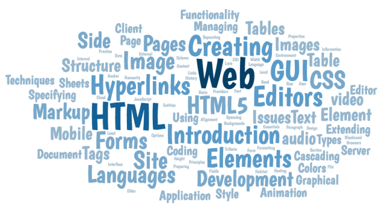

Services
Infrastructure solutions
We are your trusted partner for comprehensive infrastructure solutions. We specialize in providing top-quality IT infrastructure support and installation services to businesses of all sizes and industries. At XYZ Software Solutions, we understand that a robust and reliable IT infrastructure is the backbone of your organization's success. With our expertise and experience, we offer end-to-end solutions tailored to meet your unique requirements and drive your business forward.
Our team of skilled professionals excels in designing and implementing scalable network architectures that ensure seamless connectivity and optimal performance. Whether you need assistance with LAN/WAN setup, network security, or wireless solutions, we have the knowledge and tools to deliver exceptional results.We also specialize in server installation and configuration, empowering your business with powerful computing resources that support your critical operations. From selecting the right hardware to optimizing server performance, our experts will guide you every step of the way.
Data security is a paramount concern in today's digital landscape. We provide robust security measures to safeguard your sensitive information and protect your infrastructure from cyber threats. Our solutions include firewall implementation, intrusion detection systems, and proactive monitoring to ensure your data remains secure.Embracing cloud technology is essential for staying agile and competitive. We offer expert guidance in adopting cloud solutions that align with your business goals. Our cloud architects will help you navigate the complexities of cloud migration, ensuring a seamless transition and unlocking the benefits of scalability, flexibility, and cost-efficiency.
Partner with XYZ Software Solutions for personalized attention, reliable support, and cutting-edge infrastructure solutions. We take pride in our customer-centric approach, understanding your unique needs and delivering tailored strategies that drive your business forward.Contact us today to schedule a consultation and experience the power of a robust IT infrastructure with XYZ Software Solutions.
Application Services
At XYZ Software Solutions, we specialize in developing robust and scalable enterprise applications that empower businesses to thrive in the digital era. Whether you require web-based or mobile-based solutions, our expert team is dedicated to delivering cutting-edge applications tailored to your specific needs.
With our extensive experience in enterprise application development, we understand the unique challenges businesses face in managing complex operations and maximizing productivity. Our talented developers leverage the latest technologies and industry best practices to create intuitive and efficient applications that streamline your business processes.From custom web applications to mobile apps for iOS and Android, we design and build solutions that drive innovation, enhance customer engagement, and improve overall business efficiency. Our agile development approach ensures timely delivery, seamless integration, and continuous support throughout the development lifecycleWe collaborate closely with our clients to gather requirements, analyze business workflows, and create user-centered designs that prioritize usability and functionality. Our solutions are scalable and adaptable, allowing your enterprise applications to grow alongside your business needs.
Partner with XYZ Software Solutions for enterprise application development that empowers your business to thrive in the digital age. Experience streamlined workflows, improved productivity, and enhanced customer experiences with our tailored solutions. Contact us today to discuss your project and unlock the potential of enterprise application development with XYZ Software Solutions.
Web Development
At XYZ Software Solutions, we specialize in developing cutting-edge web applications for businesses. Whether you need a responsive website, an e-commerce platform, or a custom web solution, our expert team of web developers is here to bring your ideas to life. We leverage the latest web technologies and best practices to create engaging user experiences, seamless navigation, and high-performance websites. From front-end design to back-end development, we ensure every aspect of your web application is carefully crafted to meet your specific requirements. Trust us to deliver reliable, secure, and visually impressive web solutions that drive your business forward.
IT Support
At XYZ Software Solutions, we understand the critical role of IT infrastructure in today's business landscape. Our comprehensive IT support services are designed to keep your systems running smoothly and efficiently. From troubleshooting technical issues to proactive monitoring and maintenance, our skilled IT support team is available to provide prompt assistance and ensure minimal downtime. We offer a wide range of services, including hardware and software support, network management, data backup and recovery, security solutions, and user training. With our proactive approach and personalized support, you can focus on your core business while we take care of your IT needs. Trust us to be your reliable partner in maintaining a stable and secure IT environment.
Automation
At XYZ Software Solutions, we specialize in automating enterprise processes and streamlining administrative tasks to enhance efficiency and productivity. Our automation solutions are tailored to meet the unique needs of your organization, enabling you to optimize workflows, reduce manual errors, and save valuable time and resources. Whether it's automating repetitive tasks, integrating systems and applications, or implementing intelligent decision-making algorithms, our expert team leverages the latest technologies to deliver reliable and scalable automation solutions. By automating your enterprise processes and administrative functions, you can achieve greater operational agility, improve data accuracy, and focus your efforts on strategic initiatives that drive growth and innovation. Let us transform your business with our cutting-edge automation solutions.